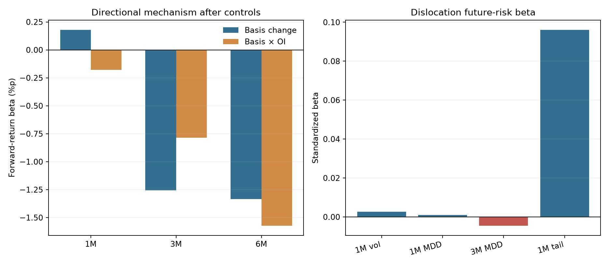
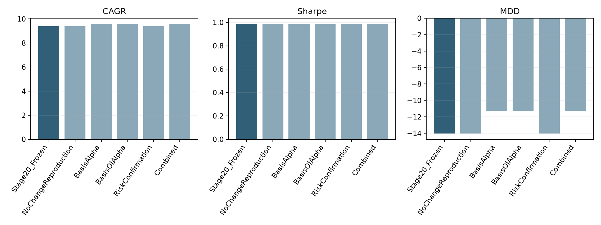

성과 흔적은 있지만 Stage20 승격은 보류
Basis 후보의 CAGR·MDD는 개선됐지만 VIX6 이후 예측력, OI 확인효과, 미래위험 설명력이 모두 사전 게이트를 통과하지 못했다.
Stage20
CAGR 9.397%
Sharpe 0.987
MDD -14.015%
기준 전략 파일 변경 없음
1. 원자료를 믿기 전에 먼저 검산했다
피드백의 첫 번째 주인공은 정산가의이론가괴리율이었지만, 그대로는 방향 신호가 아니었다.
| 필드 | 실제 상태 | 처리 |
|---|---|---|
| P101800 정산가의이론가괴리율 | 프리미엄·할인 부호가 없는 괴리 크기. 2011년 이후 95.3%가 0 | 주신호 제외 |
| 종가·정산이론가 | 1996-05 이후 연속 | signed basis 재구성 |
| 미결제약정 | 거의 전 기간 | 동일계약 20일 변화 |
| 최근·차근월 종가와 DTE | 전 기간 | 연율화 calendar 진단 |
| 내재변동성 | 유효값 전부 0 | 제외 |
| 내장 스프레드 | 429일만 존재 | 장기검정 제외 |
종가/정산이론가-1로 직접 재구성했고, 제공 괴리율은 데이터 감사용으로만 보존했다.2. 롤 점프를 막은 신호 구조
가격압력
BasisΔ20 = SignedBasis(t) - SignedBasis(t-20)
포지션 확인
Interaction = Z(BasisΔ20) × Z(OIΔ20)
20거래일 전과 현재의 계약년월이 같을 때만 값을 만든다. MACD·RSI·breakout, 5/20/60/120일 최적기간 탐색은 하지 않았다.
3. 방향 알파는 VIX6 통제 후 사라졌다
| 기간·모형 | Basis beta | p값 | IC | Basis×OI beta | p값 |
|---|---|---|---|---|---|
| 1M · Basis 단독 | +0.4695%p | 0.148 | +0.055 | — | — |
| 1M · 전체 통제 | +0.1791%p | 0.670 | +0.055 | — | — |
| 1M · Basis·OI | +0.1550%p | 0.714 | +0.055 | -0.1791%p | 0.737 |
| 3M · 전체 통제 | -1.2563%p | 0.085 | -0.049 | — | — |
| 3M · Basis·OI | -1.3597%p | 0.055 | -0.049 | -0.7866%p | 0.429 |
| 6M · Basis·OI | -1.5332%p | 0.217 | -0.057 | -1.5728%p | 0.358 |

1개월 원시관계는 약한 양수지만 통제 후 사실상 0이다. 3·6개월은 사전 예상과 반대다. OI 증가가 basis 방향을 강화한다는 상호작용도 관찰되지 않았다.
4. 선물 discount는 독립 위험센서도 아니었다
| 미래위험 | Dislocation beta | p값 | 판정 |
|---|---|---|---|
| 다음 1M 실현변동성 | +0.00268 | 0.690 | 실패 |
| 다음 1M 최대낙폭 | +0.00102 | 0.760 | 실패 |
| 다음 3M 최대낙폭 | -0.00452 | 0.265 | 부호 반대 |
| 다음 달 왼쪽꼬리 | +0.0961 | 0.804 | 실패 |
Stage20 방어월의 false-positive 로짓 beta는 -0.0468로 방향은 맞지만 p=0.746이다. 기술통계에서는 VIX6 high / Futures normal의 FP가 56.5%, VIX6 high / Futures stress가 45.5%였지만 회귀가 이를 확인하지 못했다.
5. Stage20에 실제로 넣어본 네 방식
모든 계수는 해당 월 이전의 자료만 사용한다. Stage20의 거시확률, VIX6 stress, 기술 신뢰도, SLSQP 변동성·CDaR 제약, 거래비용, 롱온리 조건을 그대로 유지했다.
6. 전체기간 성과
| 전략 | CAGR | Sharpe | MDD | 월평균 회전율 | 누적 비용 |
|---|---|---|---|---|---|
| Stage20 동결 | 9.397% | 0.987 | -14.015% | 2.68% | 1.86% |
| BasisAlpha | 9.582% | 0.986 | -11.280% | 7.58% | 5.34% |
| BasisOIAlpha | 9.581% | 0.986 | -11.287% | 7.58% | 5.34% |
| RiskConfirmation | 9.399% | 0.987 | -14.024% | 2.68% | 1.86% |
| Combined | 9.584% | 0.986 | -11.280% | 7.57% | 5.33% |

7. 초기와 후기의 역할이 달랐다
| 전략 | 2007~2017 CAGR / Sharpe / MDD | 2018~2026 CAGR / Sharpe / MDD |
|---|---|---|
| Stage20 | 6.65% / 0.756 / -14.01% | 12.94% / 1.250 / -11.42% |
| BasisAlpha | 6.41% / 0.777 / -10.96% | 13.69% / 1.209 / -11.28% |
| Combined | 6.41% / 0.778 / -11.00% | 13.69% / 1.209 / -11.28% |
초기에는 MDD와 Sharpe를 개선하면서 CAGR을 낮췄고, 후기에는 CAGR을 올리면서 Sharpe를 낮췄다. 하나의 안정적인 수익 알파라기보다 위험노출 시점을 바꾼 효과에 가깝다.
8. 부트스트랩은 확신을 주지 못했다
12개월 원형 블록 2,000회에서 BasisAlpha가 Stage20보다 좋아질 확률은 CAGR 59.5%, Sharpe 51.8%, MDD 86.6%였다. MDD 개선 가능성은 보이지만 CAGR과 Sharpe는 거의 반반이다. 5% 분위수에서 CAGR 차이는 -1.31%p, Sharpe 차이는 -0.150으로 음수다.
9. 승격 게이트
메커니즘 · 실패
- 1M basis 양수·p<10%: 실패
- 3M 또는 6M basis 양수: 실패
- 1M basis×OI 양수·p<10%: 실패
- 미래위험 2개 이상 유의: 실패
- false-positive 로짓 유의: 실패
성과 · 참고만
- CAGR: 소폭 개선
- Sharpe: 개선 없음
- MDD: 개선
- 거래비용: 크게 증가
- 부트스트랩 CAGR·Sharpe: 불확실
성과가 좋아 보인다는 이유로 경제 게이트를 건너뛰지 않았다. Stage20을 기준 전략으로 유지한다.
10. 파일과 재현
| 파일 | 내용 |
|---|---|
futures_basis_oi_confirmation_slsqp.py | 원자료 로더, 롤 안전 신호, 회귀, 인과 보정, SLSQP 백테스트 |
outputs/normalized_k200_futures_daily.csv | 최근·차근월 원자료와 재구성 daily factor |
outputs/monthly_futures_basis_oi_signals.csv | 실제 월별 신호·slope·μ 조정 |
outputs/performance_comparison.csv | 전체·초기·후기 성과 |
outputs/validation_report.json | 게이트, 부트스트랩, solver, 해시 감사 |
$py = 'D:\Programming\python_example\Arcana\.venv-llama\Scripts\python.exe' & $py -m strategies.stage34_futures_basis_oi_confirmation.futures_basis_oi_confirmation_slsqp
11. 정리
선물 basis/OI는 옵션 WingAsym보다 경제적 원천이 분명했지만, 이번 고정 설계에서는 VIX6 이후 독립 정보로 확인되지 않았다.
채택하지 않은 것: Stage20 μ 변경, VIX6 방어 규칙 변경, OI 상호작용, 성과만 보고 만든 사후 문턱.